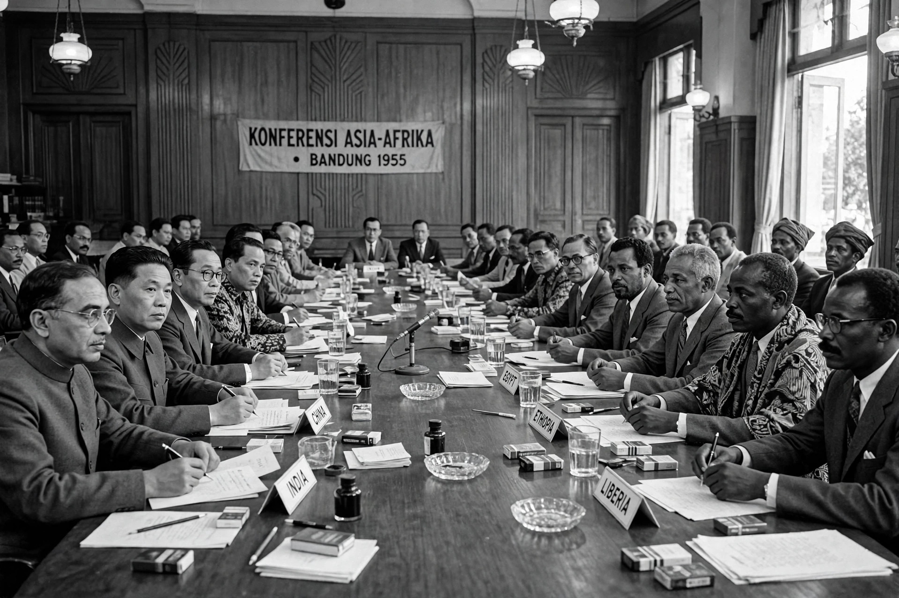

The term Third World arose during the Cold War to define countries that remained non-aligned with either NATO or the Warsaw Pact. The United States, Canada, the United Kingdom and their allies represented the "First World"; the Soviet Union, China and their allies the "Second World"; and the neutral and non-aligned states — most of Asia, Africa and Latin America — the Third World.
The phrase was coined by the French demographer Alfred Sauvy in an article published in L'Observateur on 14 August 1952. Sauvy drew an analogy with the Third Estate of pre-revolutionary France: the Third World, like the Third Estate, was "ignored, exploited, despised ... and it too wants to be something." The term gained currency as newly independent states sought a collective identity distinct from the two superpower blocs, expressed at the Bandung Conference of 1955 and in the Non-Aligned Movement founded in Belgrade in 1961.
Mao Zedong's "Theory of Three Worlds" divided the planet differently: the two superpowers (the United States and the USSR) formed the First World, their developed allies the Second, and the developing countries of Asia, Africa and Latin America the Third. Some later writers added a "Fourth World" for stateless indigenous peoples and the very poorest populations.
After the Cold War ended in 1991, the political meaning of the term collapsed, and "Third World" drifted into informal use as a synonym for poor or developing countries. It is now widely criticised as outdated and pejorative, implying a hierarchy of nations and lumping together enormously different societies. Preferred terms include "developing countries", "least developed countries" (a formal UN category), and the "Global South".